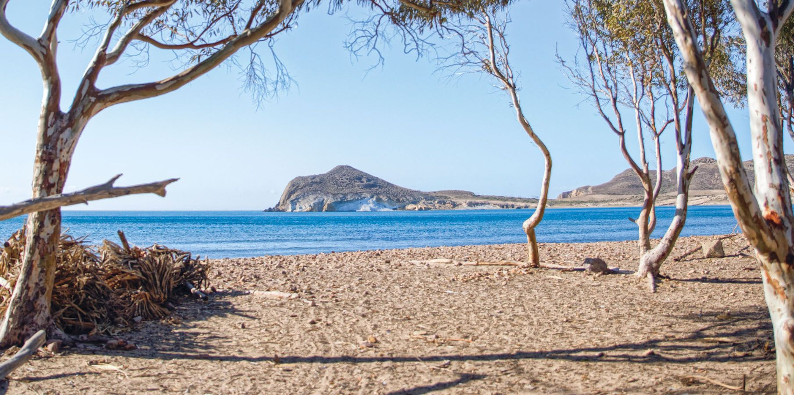
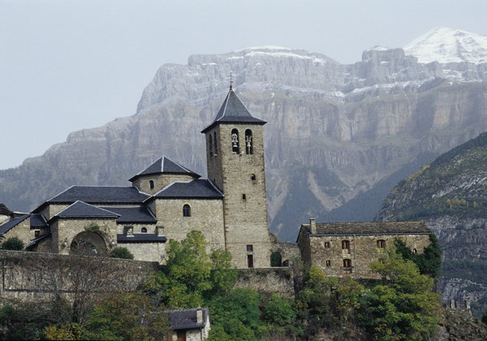
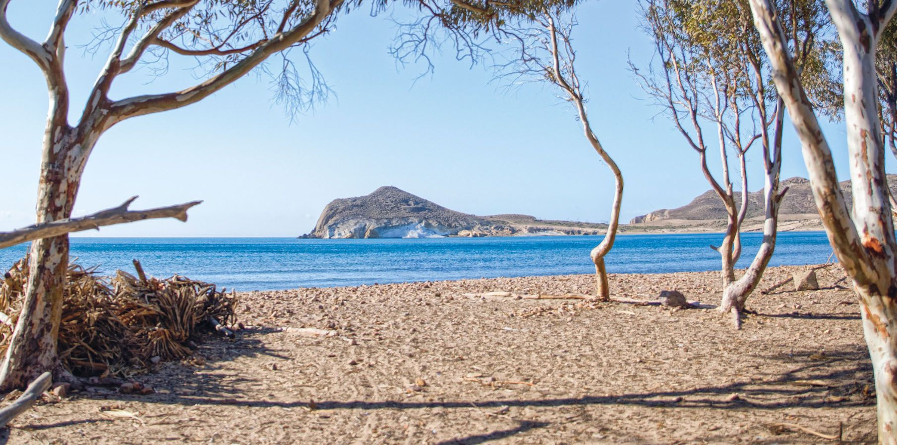
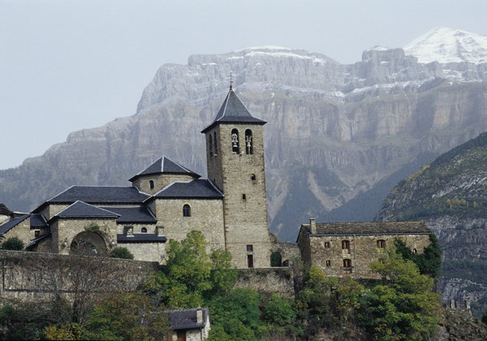

¿Dónde encontrarme?
Mar
Montaña

Pueblos
Alguien que pide una instantánea de la Tierra para guardarla en el bolsillo de la conciencia humana para siempre, para que no se nos olvide lo que fuimos, para llegar por buen camino a dónde queremos ir. Que nos transporte a ese destino la bruma que levanta en el bosque el otoño, dejando miguitas los aromas de la alfombra de hojas que van pisando nuestos guías por delante.
ExplorarMar
Montaña
Pueblos
